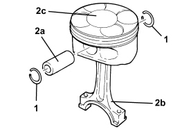
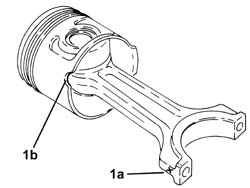
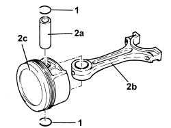

1028H54 PISTON WITH CONNECTING ROD - DISMANTLING AT THE BENCH
- Path
- Procedures > 10 ENGINE > 1028 PISTONS AND CONNECTING RODS > 1028H PISTONS AND CONNECTING RODS > 1028H54 PISTON WITH CONNECTING ROD - DISMANTLING AT THE BENCH
- Kind
- repair procedure (removal / refitting; the operation number is the code)
- Applies to
- all engines; all production periods
- Interactive page
- https://sloeber94.github.io/elrnDB-aBrrSpdr/en/#/946001852
Applies to: engines: 3.2 JTS; all production periods
 Removing
Removing
 Refitting
Refitting1. Remove the piston rings.
2. Release the pin (2a) and separate the connecting rod (2b) from the piston (2c).

Applies to: engines: 3.2 JTS; all production periods
Refitting
Removing- Join the connecting rod and piston.
- Refit the pin in its seat and secure with new piston rings.
Applies to: engines: 2.4 JTD 20v; all production periods
Removing
Refitting1. Remove the piston rings.
2. Release the pin (2a) and separate the connecting rods (2b) from the pistons (2c).

Applies to: engines: 2.4 JTD 20v; all production periods
Refitting
Removing1. Join the connecting rods to the pistons so that the number printed on the connecting rod head (1a) is facing notch (1b) on the piston skirt for the oil jet housing.
Fit the pins and secure them using the circlips.

Applies to: engines: 2.2 JTS; all production periods
Removing
Refitting1. Remove the piston rings.
2. Release the pin (2a) and separate the connecting rod (2b) from the piston (2c).

Applies to: engines: 2.2 JTS; all production periods
Refitting
Removing- Join the connecting rod and piston.
- Place the gudgeon pin in its housings and secure it using the circlips.